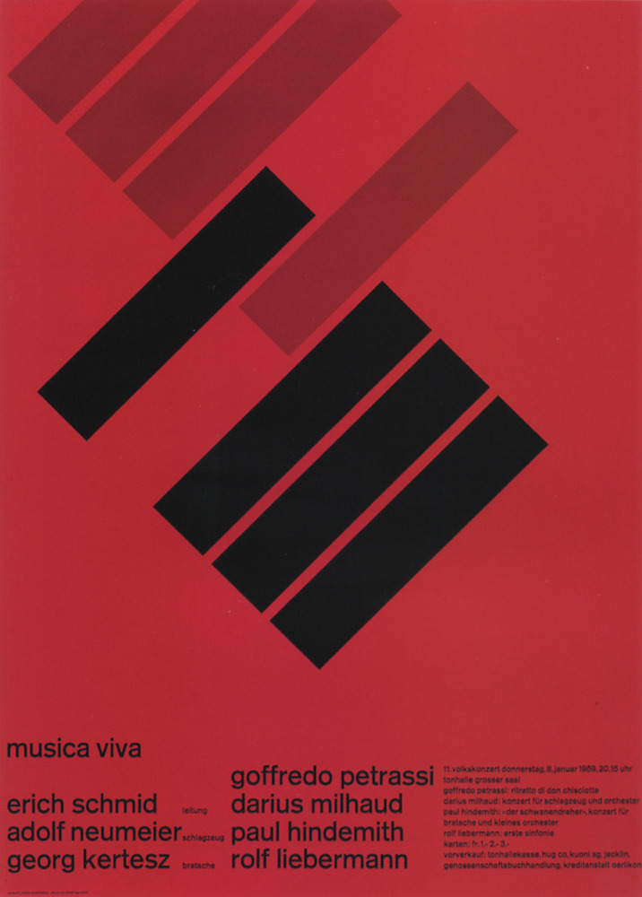
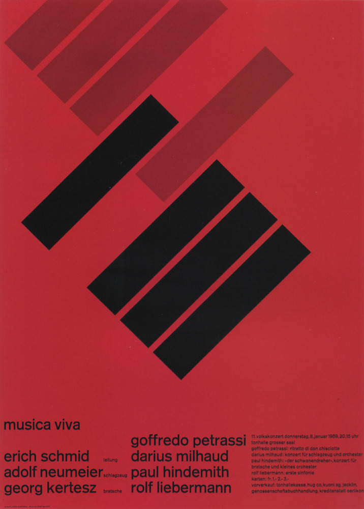

Poster series made for the Zurich
Townhalle from 1956 to 1968.It creates
a visual linkage between the language of
constructivism and musical harmonic
structures, showing the most complete
freedom within the rigid system of the grid.
Posters created in 1952 for health and
safety. He merged photography and strong
typography, showcasing a 3-dimensional
atmosphere in a 2-dimensional field.
From 1958 to 1965, Müller-Brockmann
along with 3 other designers, edited
and published the Graphik magazines,
which were crucial in establishing
international influence of the Swiss style.